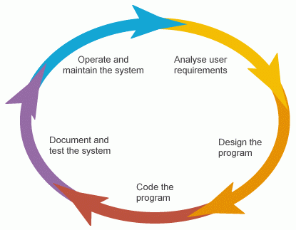

The Software Development Life Cycle
Is there a general timeline people in the industry follow when developing their software project? Yes! The software development life cycle (SDLC) is commonly used as a guideline for what tasks need to be accomplished before the completion of a software project. There are many variations of the SDLC which depend on project complexity. There are several stages to this life cycle as shown below. This section will provide a brief summary of why people use SDLC, different types of SDLC, and what happens during each respective stage of development.

Image from: https://datarob.com/essentials-software-development-life-cycle/
Advantages of SDLC
This is why you should consider using a software developement cycle!
- overarching control over software development process
- improves resource management and cost-effectiveness
- provides clear action plan → increases transparency
- improves cooperation between participants
Stages of SDLC
There are 6 important stages to the SDLC:
- Planning & Requirement Analysis
- product owner or senior members of the team conducts preliminary analysis to discover aims and issues of the client
- planning for quality assurance requirements and identification of risks
- team proposes set of solutions with a budget and risks for each solution
- Defining Requirements
- clearly define and document a specification of requirements based on solution the client has chosen (Software Requirement Specification aka SRS)
- team analyses documents related to project and evaluates the client's existing ecosystem
- Designing Product Architecture
- create several product architecture diagrams based on SRS for client to choose from
- chosen architecture finalized in Design Document Specification (DDS) and evaluated in terms of risks, operation reliability, universality, and cost-effectiveness
- DDS reviewed by all stakeholders
- Implementation/Development
- programming code is developed as per DDS by developers
- development takes majority of the life cycle
- product may change during this stage
- Testing & Integration
- quality assurance engineers (QA) test product for bugs
- testing should be throughout all stages of the life cycle
- specifically in this stage, product defects are reports, tracked, fixed, and retested until meeting standards in SRS
- Deployment & Maintenance
- product is released to appropriate market
- product may first be released in limited segment and tested in real business environment
- based on feedback, may e released as is or with suggested enhancements in targeting market segment
- maintenance is done for existing customer base
Types of SDLC
There are also 6 types of SDLC that the industry uses: Agile, Iterative, Spiral, Waterfall, V-Shaped, and Big Bang. You might be wondering, "what even????". Below provides a brief overview of each type of SDLC. Agile is currently one of the most popular types of SDLC used in the tech industry so make sure to read up on at least that part for a starter! If you ever try interviewing for a technical position at a software company, knowing how the Agile model, specifically scrum, works are lots of brownie points!
✨ Agile Model
What is Agile?
- methodology for modeling and documenting software systems
- many current firms have implemented the agile model
- allows for fast adjustments
- uses Scrum and XP approaches
What is scrum?
- goal of delivering new software capability every 2-4 weeks
- emphasis in information transparency within the team
- frequent inspections to detect variances and make adjustments early
There are many different components that make up Agile Scrum Development:
Scrum Team
- Product Owner
- project's key stakeholder (usually internal or external customer)
- only one product owner
- conveys mission and vision of product
- accountable for managing product backlog and accepting completed increments of work
- ScrumMaster
- Facilitator
- ensures team adheres to Scrum theory, practice and rules
- removes impediments, facilitates meetings, and helps Product Owner with backlog
- Development Team
- self-organizing and cross-functional group
- anyone who participates in the creation of the delivered increment
- no titles in the development team (no hierarchy)
Scrum Events
A lot of different events make up the entire scrum process. Below are the components that make up most scrums in the industry.
- Sprint
- time-boxed period where specific work is complemented and made ready for review (usually 2-4 weeks long)
- Sprint Planning Sprint
- time-boxed planning team meetings to determine which product backlog items will be delivered and how
- Daily Stand-Up
- short meeting with all team members to quickly cover progress since last stand up, planned work for next stand-up, and any impediments blocking progress
- Sprint Review
- team presents/demos work completed during sprint while Product Owner checks work against pre-defined criteria to accept or reject; stakeholders provide feedback
- Retrospective aka Retro
- final team meeting in sprint to reflect on what went well, what didn't, how team can improve
Scrum Artifacts
- Product Backlog
- document that outlines every requirement for system, project or product
- to-do list with work items ordered in terms of business value by Product Owner
- Sprint Backlog
- specific list of items from product backlog to be completed during a sprint
- Increment
- sum of all product backlog items that have been completed since last software release
- team must ensure everything in increment is ready to be released
What is XP (extreme programming)?
Practices
- sit together for face-to-face team meetings
- pair programming - all production software developed by two people sitting at the same machine
- stories - describe what the product should do in terms that are meaningful to customers and users
- weekly cycle/iteration
- team meets on first day of week to reflect on progress
- customer picks stories they want delivered for that week
- team determines how to approach those stories
- quarterly cycle/release
- customer lays out overall plan for team in terms of features desired within a particular quarter
- plan high level deliverables for stories
- slack - add low priority tasks or stories to weekly and quarterly cycles that can be dropped if team caught up with more important tasks
- ten-minute build - automatic build of entire system and run all tests in ten minutes (encourages automation of build process)
- continuous integration - code changes immediately tested when added to larger code base
- test-first programming - write failing automated test → run failing test → develop code to make test pass → run test → repeat
- incremental design - understand breadth-wise perspective of system design before diving into details of specific features of design
Roles
- customer makes business decisions (ie. what the system does, budget for project)
- developer realizes specifications of the customer
- tracker (optional) keeps track of relevant metrics to track progress and identify areas of improvement for the team
Life Cycle
- customers define desired results of project (stories)
- team estimates size of each story
- team may introduce research for stories in which they don't understand all the technical considerations
- entire team gets together to create release plan
- team performs weekly cycles
- team and customer get together at beginning of week to decide which stories should be realized
- team and customer review progress to date at end of week
Iterative Model
- many SDLC segmented into smaller cycles
- starts cycle with lots of trialling
- uses Rational Unified Process which divides development process into five distinct phases:
- business modeling
- analysis and design
- implementation
- testing
- deployment
- allows for micromanagement
- one of the most reliable approaches to development process
Spiral Model
- emphasizes smaller cycles within larger SDLC cycles
- developers spend more time on tasks rather by putting together all key steps of development process
- widely used for gradual improvements of a product
Waterfall Model
- all steps finalized before starting development
- receive approval on each stage before team moves on to next stage
- effective in risk mitigation
- may use Business Requirements Specification (documentation of customer's needs and expectations for the project) to evaluate each stage
- less popular of a model in current industry
V-Shaped Model
- extension to waterfall model
- completion of one stage before moving on to the next
- requires constant trialing during life cycle
Big Bang Model
- no guidelines!
- model was created to help navigate projects where there is little to no initial information for what the project should look like
- team figures out project as they go
- more fitting for small development teams, small or short-term projects